Making figures in Python¶
Materials:¶
Matplotlib¶
To create basic data visualizations in Python, we can use the
matplotlib library, specifically a set of functions in a module
called pyplot.
import matplotlib.pyplot as plt
import pandas as pd
Plotting from a data frame¶
Before we can plot, we need to read in our data, the gapminder.csv
data set.
df = pd.read_csv("https://raw.githubusercontent.com/DeisData/python/master/data/gapminder.csv") # read in data
print(df.head())
country year region population life_expectancy age5_surviving \
0 Afghanistan 1800 Asia 3280000.0 28.21 53.142
1 Afghanistan 1810 Asia 3280000.0 28.11 53.002
2 Afghanistan 1820 Asia 3323519.0 28.01 52.862
3 Afghanistan 1830 Asia 3448982.0 27.90 52.719
4 Afghanistan 1840 Asia 3625022.0 27.80 52.576
babies_per_woman gdp_per_capita gdp_per_day
0 7.0 603.0 1.650924
1 7.0 604.0 1.653662
2 7.0 604.0 1.653662
3 7.0 625.0 1.711157
4 7.0 647.0 1.771389
First, let’s make a histogram showing the overall distribution of life expectancy.
To do this, we initialize a blank figure and set of axes with
plt.subplots().
We then directly add the histogram to the axes with ax.hist(), being
sure to specify the life expectancy column.
Finally, we can display the figure with plt.show().
figure, ax = plt.subplots() # create blank figure and axes
ax.hist(df['life_expectancy']) # add histogram to axes
plt.show() # display figure
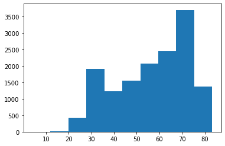
We also have many customization options. For the histogram itself, we
can specify the number of bins, the color of the bins, and color of the
bin edges within hist().
We can also specify axis labels with ax.set_xlabel() and
ax.set_ylabel(). The plot title is set with ax.set_title().
figure, ax = plt.subplots()
ax.hist(df['life_expectancy'],bins=30, color="grey", edgecolor='black') # specify bins, color, and edge color
ax.set_xlabel('Life Expectancy') # x axis label
ax.set_ylabel('Count') # y axis planning
ax.set_title('Distribution of Life Expectancy') # add title
plt.show()
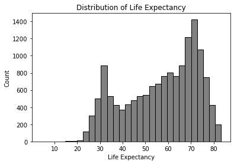
There are many more axis and plot customizations you can do. Be sure check out the matplotlib documentation.
Line Plot¶
Line plots are another simple visualization we can make through
matplotlib.
Let’s make a plot of life expectancy in Jamaica over time. First, we need to subset the data frame to only include data from Jamaica.
Then, we make a plot just as we did before, but instead of using
ax.hist(), we use ax.plot(x, y), putting the year first to
specify the x axis, followed by life expectancy for the y.
# subset data
df_jm = df[ df['country']=='Jamaica']
# create plot
figure, ax = plt.subplots()
ax.plot(df_jm['year'], df_jm['life_expectancy'], color='#333') # a dark charcoal
ax.set_xlabel('Year')
ax.set_ylabel('Life expectancy')
ax.set_title('Life expectancy over time in Jamaica')
plt.show()
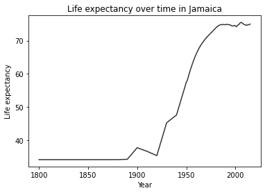
You can put two lines from separate data sources on the same plot, as
well, just by calling axis.plot() again, making sure to specify a
different color and label. Calling ax.legend() will auto-generate a
legend.
df_cb = df[ df['country']=='Cuba']
figure, ax = plt.subplots()
# draw two lines, with different colors and different labels
ax.plot(df_jm['year'], df_jm['life_expectancy'], color='#333', label='Jamaica')
ax.plot(df_cb['year'], df_cb['life_expectancy'], color='blue', label='Cuba')
ax.set_xlabel('Year')
ax.set_ylabel('Life expectancy')
ax.set_title('Life expectancy over time in Jamaica and Cuba')
ax.legend() # add axis
plt.show()
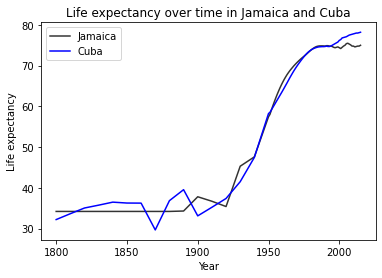
Multipanel Plots¶
You can also subdivide a figure into multiple panels with
plt.subplots(x,y), with x being the number of rows, and y being the
numbers of columns. This creates an axes object with multiple indexes.
First, let’s do a simple vertical column with 2 panels with
plt.subplots(2,1). To make the different plots, you specify where
with ax[i].
df_cb = df[ df['country']=='Cuba']
# create plot
figure, ax = plt.subplots(2,1) # rows by columns
ax[0].plot(df_jm['year'], df_jm['life_expectancy'])
ax[1].plot(df_cb['year'], df_cb['life_expectancy'])
# figure.set_title('Life expectancy over time in Cuba')
plt.show()
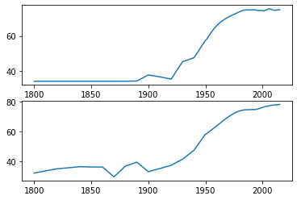
To make labels and titles for the panels, you also need to specify
ax[i] for each label. Thankfully, we can use
plt.subplots(sharex=True, sharey=True) to minimize the number of
labels. This also makes the axes of the different panels have the same
ranges. Make sure your panels use the same units, however.
# create plot
figure, ax = plt.subplots(2,1, sharex=True, sharey=True) # rows by columns
ax[0].plot(df_jm['year'], df_jm['life_expectancy'])
ax[1].plot(df_cb['year'], df_cb['life_expectancy'])
ax[1].set_xlabel('Year')
ax[0].set_ylabel('Life expectancy')
ax[1].set_ylabel('Life expectancy')
ax[0].set_title('Jamaica')
ax[1].set_title('Cuba')
plt.show()
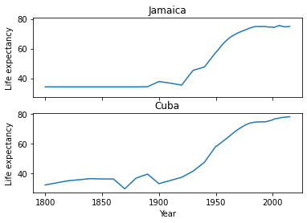
If subplots become too squished, you can also change the figure size
with plt.subplots(figsize=(x,y)).
figure, ax = plt.subplots(2,1, sharex=True, sharey=True, figsize=(6,8)) # rows by columns
ax[0].plot(df_jm['year'], df_jm['life_expectancy'])
ax[1].plot(df_cb['year'], df_cb['life_expectancy'])
ax[1].set_xlabel('Year')
ax[0].set_ylabel('Life expectancy')
ax[1].set_ylabel('Life expectancy')
ax[0].set_title('Jamaica')
ax[1].set_title('Cuba')
plt.show()
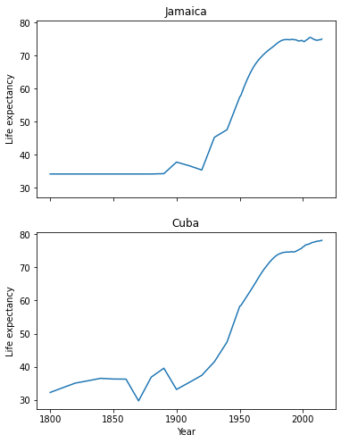
If we want to use multiple rows and columns, we now gain another index
(ax[i,j]).
df_us = df[df['country']=='United States']
df_ca = df[df['country']=='Canada']
figure, ax = plt.subplots(2,2, sharex=True, sharey=True, figsize=(8,8)) # rows by columns
ax[0,0].plot(df_jm['year'], df_jm['life_expectancy'])
ax[0,0].set_title('Jamaica')
ax[0,1].plot(df_cb['year'], df_cb['life_expectancy'])
ax[0,1].set_title('Cuba')
ax[1,0].plot(df_us['year'], df_us['life_expectancy'])
ax[1,0].set_title('United States')
ax[1,1].plot(df_ca['year'], df_ca['life_expectancy'])
ax[1,1].set_title('Canada')
plt.show()
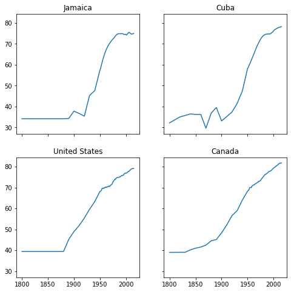
When the number of panels, the amount of code duplication can get a
little out of hand. Here, we use a nested for loop and nested list
to reduce the amount of code needed for a 3 x 3 figure.
We generate a blank multipanel figure before the loops. We then make one row at a time, going left to right, making a new subset for each panel.
# how many rows and columns?
nrow = 3
ncol = 3
# draw axes
figure, ax = plt.subplots(nrow,ncol, sharex=True, sharey=True, figsize=(10,10))
# list of lists of countries -> 3x3
countries = [
['Jamaica', 'Cuba', 'United States'],
['Canada', 'India', 'China'],
['Nigeria','France', 'Germany']
]
for i in range(nrow): # i goes from 0 - 2
for j in range(ncol): # j goes from 0 - 2
country = countries[i][j]
df_sub = df[df['country']==country]
ax[i,j].plot(df_sub['year'], df_sub['life_expectancy'], color='#333')
ax[i,j].set_xlabel('Year')
ax[i,j].set_ylabel('Life expectancy')
ax[i,j].set_title(country) # make sure to give each a title
plt.show()
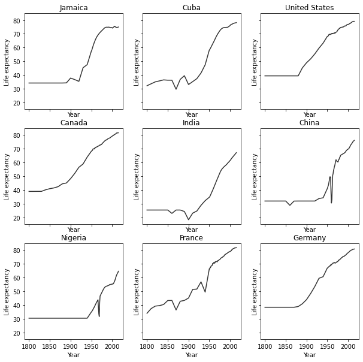
Seaborn¶
Seaborn is another plotting library in Python. It has many different figure themes and color palettes built in to make great visualizations out of the box. It has its own syntax and functions, but it also has compatibility with Matplotlib, if you would like to use the same functions but with Seaborn aesthetics.
import seaborn as sns
Seaborn allows you to set a theme that will be used for subsequently
created figures. We will use the default theme with sns.set_theme().
# Apply the default theme
sns.set_theme()
For info on setting themes and palettes, see the Seaborn documentation.
We can make a stacked histogram with sns.histplot(). We specify the
data source as df with data=df. Once we do this, we can specify
that the x-values will be from the life_expectancy column, and the
colors of the stacks will be from region.
sns.histplot(data=df, x="life_expectancy", hue="region", multiple="stack")
plt.show()
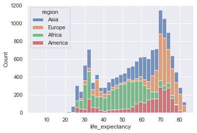
Seaborn also fully integrates with Matplotlib. Once you use a Seaborn theme, Matplotlib will also use that theme.
## same code as above for 3x3 plot
# how many rows and columns?
nrow = 3
ncol = 3
# draw axes
figure, ax = plt.subplots(nrow,ncol, sharex=True, sharey=True, figsize=(10,10))
# list of lists of countries -> 3x3
countries = [
['Jamaica', 'Cuba', 'United States'],
['Canada', 'India', 'China'],
['Nigeria','France', 'Germany']
]
for i in range(nrow): # i goes from 0 - 2
for j in range(ncol): # j goes from 0 - 2
country = countries[i][j]
df_sub = df[df['country']==country]
ax[i,j].plot(df_sub['year'], df_sub['life_expectancy'], color='#333')
ax[i,j].set_xlabel('Year')
ax[i,j].set_ylabel('Life expectancy')
ax[i,j].set_title(country) # make sure to give each a title
plt.show()
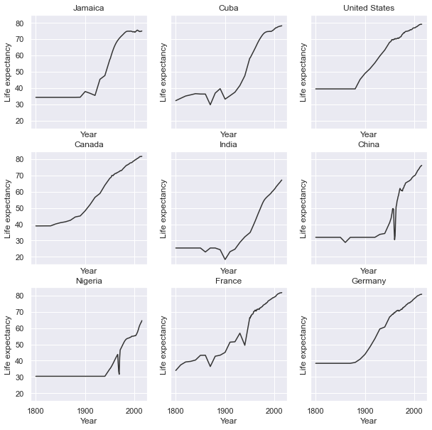
Question: Multipanel figures¶
Plot histograms of population for each region in the year 2000 in
the gapminder.csv data set. You can do this in one or multiple
panels.
### your code here:
Solution
One panel with Seaborn
# import log function
from numpy import log10
# subset
df_2000 = df[df['year']==2000].copy() # .copy() removes some warnings pandas will throw
# log transform
df_2000['population_log10'] = log10(df.population)
sns.histplot(df_2000, x='population_log10', multiple='stack', hue='region')
plt.show()
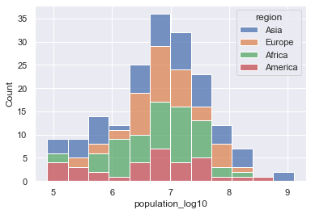
Multipanel
# import log function and array
from numpy import log10
# subset
df_2000 = df[df['year']==2000].copy() # .copy() removes some warnings pandas will throw
# log transform
df_2000['population_log10'] = log10(df.population)
nrow = 2
ncol = 2
# draw axes
figure, ax = plt.subplots(nrow,ncol, sharey=True, figsize=(10,10))
# creates a pandas 2x2 object of region names
regions = pd.unique(df_2000.region).reshape((2,2))
for i in range(nrow): # i goes from 0 - 1
for j in range(ncol): # j goes from 0 - 1
region = regions[i][j]
df_sub = df_2000[ df_2000['region']==region]
ax[i,j].hist(df_sub['population_log10'], bins=15)
ax[i,j].set_xlabel('Population (log10)')
ax[i,j].set_xlim((4.5,9.5)) # make them have the same x range
ax[i,j].set_ylabel('Number of countries')
ax[i,j].set_title(region)
plt.show()
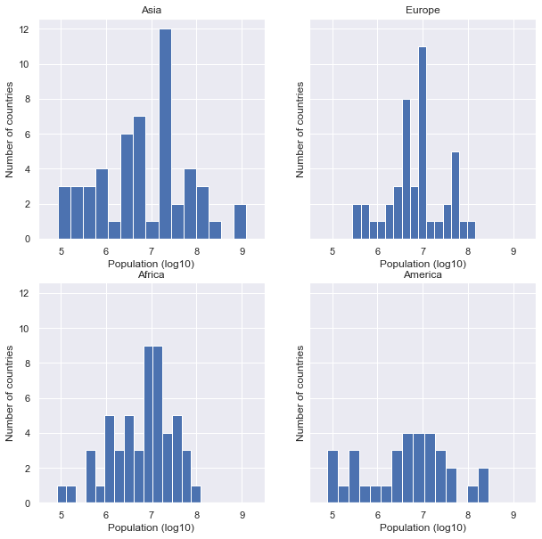
Resources¶
You can make virtually any plot and customization you can think of in Python. Some searching online will go a long way in showing how to do construct your dream figure.